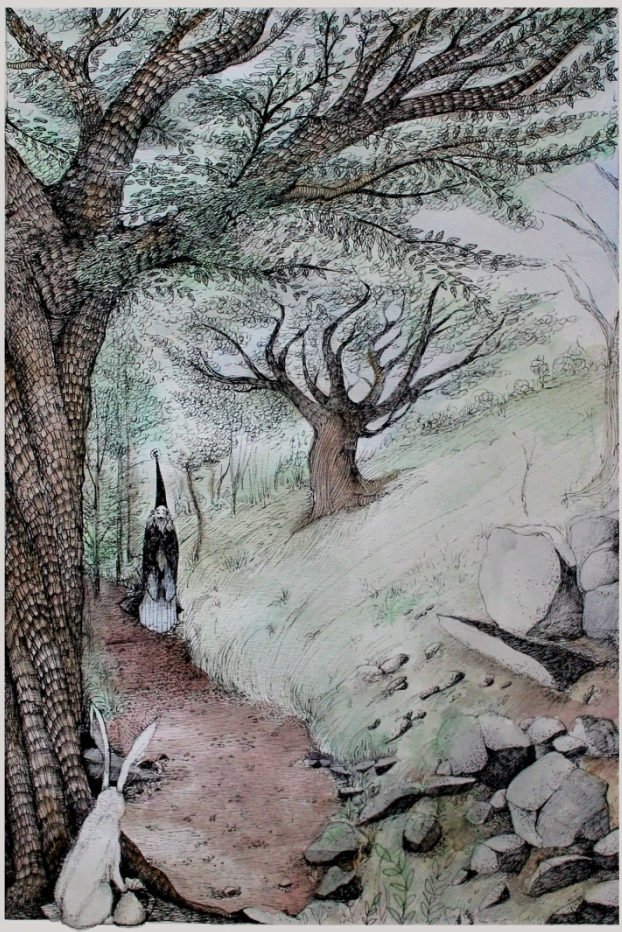
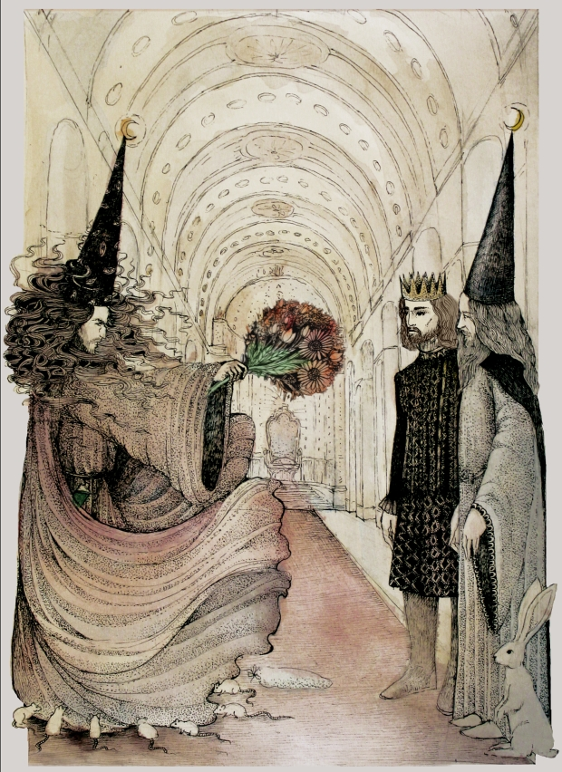

Tapferhase und der Traurigste Mensch der Welt
Es gab einmal eine wunderschöne, runde Wiese, und drum herum einen tiefen, dichten Wald.
Und auf dieser Wiese und in diesem Wald lebte eine Gruppe von Hasen.
Genau hundert waren sie.
Von den hundert waren neunundneunzig übliche, gewöhnliche, durchschnittliche Hasen.
Doch der hundertste, der war besonders.
Denn dieser war tapfer.
So hieß er auch: Tapferhase.
Eines Tages sammelte Tapferhase Heilkräuter im Wald für einen Hasen, der sich übel erkältet hatte. Da sah er auf einmal auf dem Pfad, der durch den Wald führte, eine Gestalt, die sich ihm langsam näherte.
Es war ein Mensch. Er trug einen Zauberergewand und spazierte langsam Richtung Tapferhase, ohne aber ihn wahrzunehmen. Er ging mit gebücktem Rücken, und sein Gesicht war so traurig, dass selbst die immer fröhlichen Waldfeen bei seinem Anblick zu weinen begonnen hätten.
Er war zweifellos der traurigste Mensch der Welt.

-„Was ist denn los mit Dir? Warum bist du so traurig?“ sprach Tapferhase den Zauberer an.
-„Ach, frag nicht...“ seufzte dieser „ich...ich wurde rausgeschmissen. Ich bin zu alt geworden... meine Zauberkraft schwindet dahin... ich schaffe nicht einmal mehr einfachste Zauber... und mein Prinz hat keine Verwendung mehr für mich!“ – klagte der alte Zauberer, und wurde, wenn überhaupt möglich, noch ein bisschen trauriger.
-„Aber lass doch nicht die Ohren hängen“ versuchte Tapferhase ihn zu trösten „es gibt doch sicher noch einige Zaubersprüche, die du schaffen kannst“.
-„Nein, keinen einzigen! Schau her! Zum Beispiel, ein Verkleinerungszauber. Früher ein Kinderspiel für mich. Und jetzt?“
Der Zauberer nahm seinen reich verzierten Zauberstab, zeigte damit auf eine Blume und murmelte einen Zauberspruch. Die Blume wurde jedoch überhaupt nicht kleiner, sondern fing an, zu wachsen. Sie wurde immer größer und größer, und war schließlich so groß wie ein Baum. Eine Biene, die drum herum kreiste, war zunächst überrascht, stürzte sich dann aber mit großer Freude auf die Riesenblume, und flog dann davon, um den anderen Bienen Bescheid zu sagen.
-„Oder ein Farbwechselzauber. Eigentlich ein ganz einfacher Spruch.“ Nun zeigte er auf einen grauen Stein und sprach den Spruch. Doch die Farbe änderte sich überhaupt nicht, stattdessen fing der Stein an, wie ein Frosch hin und her zu hüpfen, und machte dabei ein gackerndes Geräusch. „Quack! Quack!“ – und der Stein hüpfte davon.
-„Siehst Du?“ Fragte der Zauberer wehmütig. „Es klappt nichts mehr“.
-„Hmm....“ sagte Tapferhase, dem jetzt auch nichts mehr einfiel, um den Zauberer zu trösten.
-„Du sagtest, du wurdest rausgeschmissen?“
-„So ist es. Ich war viele Jahre der Zauberer des Prinzen. Er wohnt unweit von hier, in einem Schloss in seiner Stadt. Vom Rande des Waldes kannst Du die Mauern seiner Stadt sehen“.
Tapferhase kannte diese Mauern vom Sehen, war aber noch nie in der Stadt gewesen.
-„Ich hatte viele Aufgaben“ erzählte der Zauberer weiter „und eine von ihnen war, den Prinzen jeden Morgen mit einem Zauberspruch zu rasieren. Das klappte viele Jahre lang gut, es ist ja auch kein schwerer Spruch. Doch vor zwei Tagen, da geschah etwas Merkwürdiges.
Der Bart meines Prinzen verschwand nicht nach meinem Rasierspruch, sondern begann, im Gegenteil, stark zu wachsen. Es wuchs und wuchs, und zu Mittag hatte er bereits einen so großen Vollbart, dass er aussah wie ein Löwe. Und sein Bart hörte nicht auf, zu wachsen.
Gestern früh war sein Bart bereits so lang, dass es bis zu seinem Bauch reichte. Ich versuchte erneut den Rasier-zauberspruch, doch der Bart wurde dadurch nur rot, und wuchs weiter. Auch andere Sprüche wollten mir nicht mehr gelingen, ich hatte unzählige Zauberunfälle in meinem Zauberlabor.
Heute Morgen war der Bart meines Prinzen schon so lang, dass es zwei Diener hinter ihm hinterhertragen mussten. Als ich es wieder mit dem Rasierspruch probierte, da verschwand der Bart wieder nicht, sondern... sondern es erschienen kleine Vögel in seinen Bart und sie begannen dort rumzuhüpfen und zu zwitschern.
Da erboste mein Prinz schrecklich, warf mich aus seinem Schloss und befahl mir, die Stadt zu verlassen.“
-„Und was hast du jetzt vor? Wo willst Du hin?“ fragte Tapferhase.
-„Ich weiß es nicht“ erwiderte der Zauberer.
-„Dann komm doch erst einmal zu uns Hasen, wir haben eine wunderbare Wiese, und können dir leckeren Salat und Möhren geben. Du kannst auch bei uns übernachten, wenn du magst.“
Der Zauberer mochte zwar Salat und Möhren gar nicht so gern, trotzdem verspürte er das erste Mal seit Tagen ein klitzekleines Bisschen Freude.
Die anderen Hasen hatten zunächst Angst vor dem Zauberer, doch Tapferhase überzeugte sie, dass der Zauberer ihnen nichts tun würde, also hießen sie den Zauberer willkommen, brachten ihm selbstangebaute Möhren und Salat, und bereiteten ihm ein bequemes Bett aus warmen Laub. Schon bald schlief der Zauberer ein und schnarchte laut vor sich hin.
Während der Zauberer schlief, entschloss sich Tapferhase, dem Zauberer helfen zu wollen und machte sich auf den Weg in die Stadt.
Die Stadt war tatsächlich nicht weit, jedoch umgeben von einer hohen Mauer, die nur ein Tor hatte. Dieser wurde von Soldaten bewacht, die Kettenhemden und Schwerter trugen. Tapferhase stellte bat sie um Erlaubnis, die Stadt zu betreten, doch die Soldaten ließen ihn nicht hinein.
-„Hasen haben hier nichts zu suchen“ sagten sie streng.
Tapferhase kehrte also auf die Wiese zurück und überlegte die halbe Nacht, wie man denn in die Stadt gelangen könnte. Schließlich bat er nächsten Morgen die anderen Hasen, ihm zu helfen, einen Tunnel zur Stadt zu bauen. Und so arbeiteten alle hundert Hasen den ganzen Tag, um den längsten Hasentunnel zu bohren, den die Welt je gesehen hat. Am Abend war es fertig, und als es dunkel wurde, stieg Tapferhase hinab und rannte und rannte, bis er am anderen Ende des Tunnels ankam.
Dort steckte er vorsichtig seinen Kopf heraus, und sah, dass er tatsächlich in der Stadt war, genau neben dem Schloss. Er sprang schnell aus dem Tunnel und hüpfte, so dass ihn niemand sieht, ins Schloss.
Tapferhase eilte in den höchsten Turm des Schlosses, zum Thronsaal, denn er wollte mit dem Prinzen sprechen. Im Thronsaal war jedoch gerade eine Feier zugange, und als Tapferhase besser hinhörte, wurde ihm klar, dass gerade ein neuer Zauberer ernannt wird.
Der Prinz trug keinen Bart mehr. Er sprach zum neuen Zauberer:
-„was für ein Glück, mein lieber Zauberer, dass es Dich gerade heute in unsere Stadt verschlagen hat! Mein alter Zauberer hat leider seine Zauberkraft verloren, seine Zauber gelingen alle nicht mehr, ich musste ihn fortschicken. Du bist von jetzt an mein neuer Zauberer“
-„Was für ein interessanter Zufall“ dachte sich Tapferhase „dass gerade heute ein neuer Zauberer auftaucht“. Er folgte nach dem Ende der Feierlichkeiten dem neuen Zauberer heimlich in sein Zimmer, versteckte sich dort in einen Schrank und lauschte. Er musste nicht lange warten, da fing der neue Zauberer an, laut zu prahlen:
-„Endlich habe ich es geschafft! Der alte Zauberer ist weg und ich bin der neue Zauberer! Mein Plan hat funktioniert! Der jämmerliche alte Zauberer... er weiß wohl immer noch nicht, warum alle seine Zaubersprüche fehlschlagen. Wenn er nur wüsste“ und er lachte spöttisch „tja, er hat wohl noch nicht von meinem besonderen Zaubertrank gehört“ und er nahm ein Gläschen von seinem Gürtel, das mit einer seltsamen, grünen Flüssigkeit gefüllt war, und schaute es liebevoll an. „Nur ein Tropfen auf einen Zauberstab, und es funktioniert nie wieder... niemals!“
-„Und wenn der Prinz es nur wüsste...“ er wieder lachte spöttisch „bald wird auch er mir nicht mehr im Wege stehen, und ich werde der neue Prinz dieser Stadt sein!“
Tapferhase wartete bis er einschlief, schlich aus dem Schrank, aus dem Zimmer, aus dem Schloss und rannte zurück durch den Tunnel auf die Wiese.
Am nächsten Morgen bat Tapferhase die Hasen, den Tunnel so zu erweitern, dass auch ein Mensch durchpasst. Zum alten Zauberer sagte er:
-„Du hast gar nichts verlernt; es sind üble Machenschaften im Spiel. Lass uns heute Abend gemeinsam ins Schloss gehen.“
-„Aber die Soldaten würden mich nicht in die Stadt lassen“ – erwiderte der Zauberer.
-„Lass das meine Sorge sein“, sagte Tapferhase.
Tatsächlich war der Tunnel am Abend erweitert, und Tapferhase und der alte Zauberer stiegen hinab. Auf dem Weg erzählte Tapferhase dem alten Zauberer, was er im Schloss gehört hatte. Schließlich stiegen sie am anderen Ende unbemerkt aus dem Tunnel, schlichen ins Schloss und suchten so lange nach dem Prinzen, bis sie ihn gefunden hatten.
-„Du? Was machst Du denn hier?“ sagte der Prinz überrascht als er den alten Zauberer erblickte. „Habe ich dir nicht gesagt, du sollst nie wiederkommen? Ich habe bereits einen neuen Zauberer, und der hat meinen Bart endlich weggezaubert – was du nicht geschafft hattest“.
-„Mein Prinz“ antwortete der alte Zauberer „hör mich an. Ich wurde Opfer eines bösen Plans“.
Da kam der neue Zauberer hinzu und sagte: „Was für ein Quatsch, du kannst einfach nicht mehr zaubern. Fort mit dir!“
-„Ich kann nicht mehr richtig zaubern, weil du meinen Zauberstab mit deinem grünen Zaubertrank verflucht hast. Da ist der Trank, im Gläschen auf deinem Gürtel.“
-„Was? Das ist eine Lüge! Lieber Prinz, lass diesen alten Mann endgültig aus der Stadt werfen“ sagte der neue Zauberer.
-„Eine Lüge?“ fragte Tapferhase, und alle Augen richteten sich auf ihn. „So, so. Dann nimm doch deinen grünen Trank, und tropfe es auf deinen eigenen Zauberstab. Dann werden wir ja sehen, ob du noch zaubern kannst.“
Der neue Zaubere erschrak. Er dachte nach, wusste aber keinen Ausweg. Wie er auch handeln würde, er wäre so oder so entlarvt.
Schließlich sagte er: „Nun gut. Es ist wahr“.
-„Wie bitte?“ schrie der Prinz, der nun gar nichts mehr verstand.
-„Ich war es tatsächlich, der den Zauberstab deines Zauberers kaputtgemacht hat. Es war gar nicht schwer: ich musste mich nur vor einigen Tagen unsichtbar zaubern, ins Schloss schleichen, und einige Tropfen meines Zaubertranks auf den Stab des alten Zauberers tropfen lassen. Dann musste ich nur warten, denn ich wusste, es würde nicht lange dauern, bis du deinen Zauberer rausschmeißt. Als es dann soweit war, musste ich mich nur als neuen Zauberer anbieten.“
-„Aber... aber warum? Warum hast du das getan?“
-„Ganz einfach. Das war nur der erste Schritt. Ich werde der Herr dieser Stadt sein! Das Schloss, die Schatzkammer – alles wird mir gehören!“
-„Damit kommst Du nicht davon, du übler Wicht“ sagte der Prinz und zog sein Schwert.
-„Doch, das werde ich“ sagte der neue Zauberer und zog seinerseits seinen Zauberstab. „denn ich verwandele euch alle zu Mäusen“.
Bevor jemand etwas unternehmen konnte, schrie er einen Zauberspruch, und.... und es passierte etwas Merkwürdiges: Der Prinz, der alte Zauberer und Taperhase wurden überhaupt nicht zu Mäusen. Sondern es erschienen sieben kleine Mäuse aus dem Nichts, die sofort zum neuen Zauberer rannten und anfingen an seinem Zauberergewand zu knabbern.
-„Was? Was ist los?“ wunderte sich der neue Zauberer. „Egal. Dann werdet ihr halt zu Stein!“
Es sprach den Spruch und es sprangen Funken aus seinem Zauberstab, doch es wurde niemand zu Stein, stattdessen erschien am Ende seines Zauberstabes ein Luftballon, blies sich langsam auf, und platzte: BANG!
-„Unmöglich!“ brüllte der neue Zauberer. „dann sollt ihr für immer taub und stumm werden!“ Aus seinem Zauberstab kamen nun Blitze, so hell, dass alle ihre Augen schließen mussten.
Als sie sie wieder öffneten, sahen sie den neuen Zauberer, aber er hatte nicht mehr seinen Zauberstab in der Hand, sondern einen prächtigen Blumenstrauß und zeigte damit immer noch wütend auf den Prinzen, den alten Zauberer und Tapferhasen.
Entsetzt fragte er „Was ist passiert“ Wie ist das möglich?“
-„Weißt du“ erklärte Tapferhase „wir Hasen sind neugierige Tiere. Ich habe mich gefragt, was macht denn dein Trank wirklich mit Zauberstäben? Deshalb habe ich gestern Nacht, als du schliefst, deinen eigenen Zauberstab mit deinem grünen Zaubertrank eingerieben“.
-„Nein...nein...mein Zauberstab...“
-„Blumenstrauß“ korrigierte Tapferhase. „Sehr schön und bunt. Zaubern kann man aber damit wohl leider nicht mehr.“

-„Wachen!“ rief der Prinz und ließ den neuen Zauberer ins Kerker werfen.
Der Prinz wandte sich zum alten Zauberer und Tapferhasen.
-„Wie kann ich euch danken? Ihr habt mich, und die Stadt vor diesem Bösewicht gerettet. Mein Zauberer, bitte vergebe mir. Bitte nehme wieder deinen Platz als Zauberer meines Schlosses an.“
-„Wirst Du jemals noch richtig zaubern können?“ fragte Tapferhase den alten Zauberer.
-„Oh ja“ erwiderte dieser. „Einen neuen Zauberstab herzustellen ist kompliziert und langwierig, aber möglich“.
-„Und du, Hase“ fuhr der Prinz fort „du und deine Freunde sollen von nun an jederzeit in dieser Stadt und in diesem Schloss willkommen sein.“
Und die Stadt feierte 7 Tage und 7 Nächte lang; und tatsächlich hatten von nun an Tapferhase und all die anderen Hasen freien Zugang zur Stadt; sie mussten den Tunnel zur Stadt nie wieder nutzen (mit einer Ausnahme, aber das ist eine andere, lange Geschichte).
Was den alten Zauberer angeht.... er war an diesem Abend der glücklichste Mensch der ganzen Welt; und er schwur für immer und ewig, wann immer die Hasen, und insbesondere Tapferhase einen Freund brauchten, für sie da zu sein.